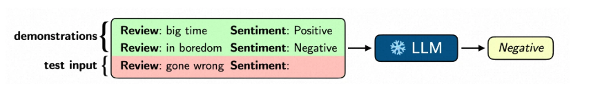
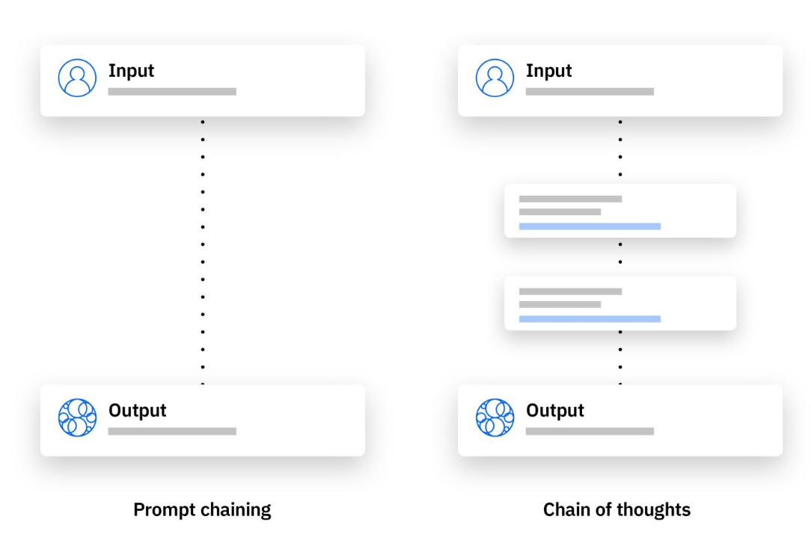
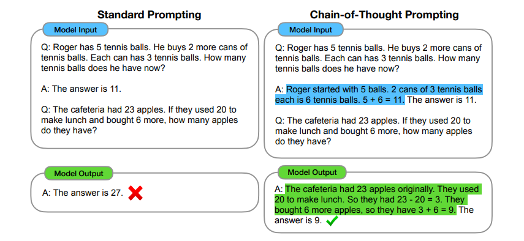

3.1 大模型微调策略¶
1.情境学习¶
情境学习（In-Context Learning） 是指大模型在不更新参数的情况下，仅通过提供示例来学习并完成任务的能力。
在这种情境学习下，大模型无需更新任何参数，仅依赖几个示例样本（demonstrations）就可以学习新任务，执行新样本的预测。

在这种情境学习的范式下，大模型无需更新任何参数，仅依赖几个示例样本（demonstrations）就可以学习新任务，执行新样本的预测。
案例1：结构化会议记录生成
用户提问：
请根据以下内容生成格式化会议记录：
本次周会决定，由张三在11月15日前完成市场分析报告初稿，并由李四在月底前完成官网UI redesign。
大模型回答结果：
周会会议记录
会议类型：周会
会议核心决议及任务分配
任务 1：市场分析报告初稿撰写
负责人：张三
交付要求：完成报告初稿
截止时间：11 月 15 日前
任务 2：官网 UI redesign
负责人：李四
交付要求：完成官网 UI 重新设计
截止时间：本月底前
利用情境学习的方式提问：
# 任务定义
你是一个信息提取专家，负责从会议纪要中精准提取行动项，并转换为标准JSON格式。
# 输出规范
## JSON Schema
{
"action_items": [
{
"item": "决议事项的完整描述（保持原文关键信息）",
"owner": "仅包含负责人姓名，如'张三'",
"deadline": "严格遵循YYYY-MM-DD格式的日期"
}
]
}
示例：
# 示例
## 输入文本
“本次周会决定，由张三在11月15日前完成市场分析报告初稿，并由李四在月底前完成官网UI redesign。”
## 期望输出
```json
{
"action_items": [
{
"item": "完成市场分析报告初稿",
"owner": "张三",
"deadline": "2024-11-15"
},
{
"item": "完成官网UI redesign",
"owner": "李四",
"deadline": "2024-11-30"
}
]
}
请根据以下内容生成结构化信息：
开发团队确认，小王需要在2025年12月31日前完成v2.0版本的核心功能开发，小张负责在年底前完成所有测试用例的编写。
输出结果为：
{ "action_items": [ { "item": "完成v2.0版本的核心功能开发", "owner": "小王", "deadline": "2025-12-31" }, { "item": "完成所有测试用例的编写", "owner": "小张", "deadline": "2025-12-31" } ] }
2.思维链¶
思维链 是一种通过让大语言模型（LLM）生成一系列中间推理步骤，来模拟人类解决复杂问题时的逐步思考过程，最终得出答案的技术。
简单来说，它不是在问题出现后直接给出最终答案，而是像一个人在做数学题时在草稿纸上写下的计算过程一样，把“脑子里想的步骤”用语言表达出来。如下图所示：

通过对比，清晰地展示了 思维链 方法的巨大优势。

标准提问：只给问题和答案。模型会模仿直接给出最终答案，但容易出错（如答案算成27）。
思维链提问：在例子中展示一步步的推理过程。模型会模仿这种“慢思考”，把解题的中间步骤写出来（先算剩下几个，再算买来后总共几个），从而得出正确答案（9）。
案例3：差旅费报销审核
假设我们员工差旅的需求报销，如果不使用思维链，模型可能会直接给出一个错误的答案。但通过引导模型生成思维链，它可以正确解决问题。
直接提问：
员工提交了一份差旅费报销单，包含以下项目：
高铁票： 550元
市内交通费： 120元
住宿费： 400元/晚 x 3晚 = 1200元
餐饮补贴： 150元/天 x 3天 = 450元
公司规定如下：
交通费实报实销，高铁票限二等座。
住宿费标准：一线城市（如北京、上海）上限为500元/晚，其他城市上限为400元/晚。本次出差城市为上海。
市内交通费每日限额50元。
餐饮补贴按出差天数发放，标准为100元/天。
请问，本次可报销的总金额是多少？
大模型回答的结果：
本次可报销的总金额为 2320 元。
总金额计算
550 元（高铁票）+ 120 元（市内交通费）+ 1200 元（住宿费）+ 450 元（餐饮补贴）= 2320 元。
上述回答明显是错误的。
使用思维链的方式提问：
请根据公司规定，逐步审核以下差旅费报销单。请遵循“思维链”的推理方式，一步一步地分析，并在最后给出结论。
报销单项目：
高铁票： 550元
市内交通费： 120元
住宿费： 400元/晚 × 3晚 = 1200元
餐饮补贴： 150元/天 × 3天 = 450元
公司规定：
交通费实报实销，高铁票限二等座。
住宿费标准：一线城市（如北京、上海）上限为500元/晚，其他城市上限为400元/晚。本次出差城市为上海。
市内交通费每日限额50元。
餐饮补贴按出差天数发放，标准为100元/天。
请按以下步骤推理：
第一步：分析和审核高铁票费用。
思考：公司对高铁票的规定是什么？申请的金额是否符合规定？
判断：
可报销金额：
第二步：分析和审核住宿费。
思考：上海属于哪类城市？住宿费标准上限是多少？申请金额是否超标？
判断：
可报销金额：
第三步：分析和审核市内交通费。
思考：出差总天数是多少？市内交通费的总限额是多少？申请金额是否在限额内？
判断：
可报销金额：
第四步：分析和审核餐饮补贴。
思考：公司标准是多少？按天数计算的总补贴限额是多少？申请金额是否超标？
判断：
可报销金额：
第五步：汇总计算最终可报销总额。
将前面各步核准的可报销金额相加。
最终可报销总额：
大模型回答结果：
第一步：分析和审核高铁票费用
思考：公司规定交通费实报实销，高铁票限二等座。未提及该高铁票座位等级超标，申请金额 550 元符合实报实销要求。判断：符合公司规定。可报销金额：550 元。
第二步：分析和审核住宿费
思考：上海属于一线城市，公司规定一线城市住宿费上限为 500 元 / 晚。员工申请 400 元 / 晚，未超过上限。判断：符合公司规定。可报销金额：1200 元。
第三步：分析和审核市内交通费
思考：出差总天数为 3 天，公司规定市内交通费每日限额 50 元，总限额为 150 元。员工申请 120 元，在总限额内。判断：符合公司规定。可报销金额：120 元。
第四步：分析和审核餐饮补贴
思考：公司规定餐饮补贴标准为 100 元 / 天，3 天总限额为 300 元。员工申请 150 元 / 天，总金额 450 元，超出限额。判断：部分超标。可报销金额：300 元。
第五步：汇总计算最终可报销总额
550 元（高铁票）+ 1200 元（住宿费）+ 120 元（市内交通费）+ 300 元（餐饮补贴）= 2170 元。最终可报销总额：2170 元。
思维链的优势：
- 问题分解：将复杂的多步骤问题分解成更小、更易管理的子问题，从而将更多的“计算资源”分配给需要深度推理的步骤。
- 可解释性：它提供了一个窗口，让人们可以看到模型是如何得出答案的。如果答案错误，我们可以很方便地检查是哪个推理步骤出了问题，便于调试。
- 通用性：这种方法可广泛应用于数学应用题、常识推理和符号操作等多种需要推理的任务。
- 易于实现：对于足够大的现成语言模型，只需在**小样本提示**的示例中，加入几个包含思维链过程的例子，模型就能学会并模仿这种推理方式。
3.总结¶
1. 情境学习 ： 不修改模型内部参数，而是通过提供示例，让模型在上下文中快速学习并执行新任务。
优势是无需训练，快速适应，简单高效。
2.思维链 ：引导模型在回答复杂问题时，模拟人类的思考方式，生成一系列**中间推理步骤**，最后才得出答案。
优势是：
- 提升准确性：将复杂问题分解为简单步骤，避免一步到位的错误。
- 增强可解释性：模型的“思考过程”一目了然，便于理解和调试。